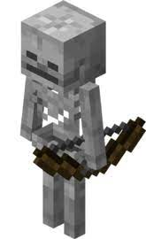

Minecraft Wiki
Minecraft — это строительная игра в жанре «песочница»,
разработанная компанией Mojang Studios и разделённая на
два издания: Java и Bedrock. Игровой процесс включает в себя
взаимодействие игроков с игровым миром через размещение и
разрушение различных блоков в трёх разных измерениях.
разработанная компанией Mojang Studios и разделённая на
два издания: Java и Bedrock. Игровой процесс включает в себя
взаимодействие игроков с игровым миром через размещение и
разрушение различных блоков в трёх разных измерениях.


Мобы Minecraft
В игре встречаются мобы. Они бывают мирные и враждебные.Ниже приведен неполный список враждебных мобов
- Крипер
- Скелет
- Зомби
- Паук